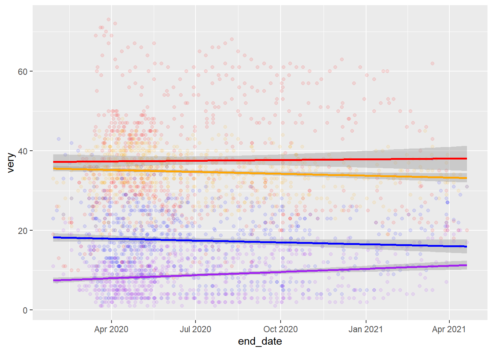

Visualization
Original Graphic
 Chart is frozen as of April 22, 2021
Chart is frozen as of April 22, 2021
Replication attempt Graphic

Source Target Visualization and Data
FiveThirtyEight’s Article: “How Americans View Biden’s Response To The Coronavirus Crisis”
Data accessible from button below the graphic. “HERE”
Data wrangling in R
Loading libraries:
library(tidyverse)## -- Attaching packages --------------------------------------- tidyverse 1.3.1 --## v ggplot2 3.3.5 v purrr 0.3.4
## v tibble 3.1.4 v dplyr 1.0.7
## v tidyr 1.1.3 v stringr 1.4.0
## v readr 2.0.1 v forcats 0.5.1## -- Conflicts ------------------------------------------ tidyverse_conflicts() --
## x dplyr::filter() masks stats::filter()
## x dplyr::lag() masks stats::lag()library(broom)
library(readr)Import CSV files from FiveThirtyEight and make into objectes:
CovidConcern<- read_csv("docs/data/covid-19-polls-master/covid_concern_polls.csv")## Rows: 678 Columns: 15## -- Column specification --------------------------------------------------------
## Delimiter: ","
## chr (7): pollster, sponsor, population, party, subject, text, url
## dbl (5): sample_size, very, somewhat, not_very, not_at_all
## lgl (1): tracking
## date (2): start_date, end_date##
## i Use `spec()` to retrieve the full column specification for this data.
## i Specify the column types or set `show_col_types = FALSE` to quiet this message.summary(CovidConcern)## start_date end_date pollster
## Min. :2020-01-27 Min. :2020-01-29 Length:678
## 1st Qu.:2020-04-13 1st Qu.:2020-04-16 Class :character
## Median :2020-05-27 Median :2020-05-31 Mode :character
## Mean :2020-07-01 Mean :2020-07-04
## 3rd Qu.:2020-09-02 3rd Qu.:2020-09-06
## Max. :2021-04-17 Max. :2021-04-20
##
## sponsor sample_size population party
## Length:678 Min. : 502 Length:678 Length:678
## Class :character 1st Qu.: 1002 Class :character Class :character
## Mode :character Median : 1031 Mode :character Mode :character
## Mean : 2803
## 3rd Qu.: 1959
## Max. :91214
##
## subject tracking text very
## Length:678 Mode :logical Length:678 Min. : 8.00
## Class :character FALSE:538 Class :character 1st Qu.:27.00
## Mode :character TRUE :140 Mode :character Median :35.00
## Mean :37.56
## 3rd Qu.:47.00
## Max. :73.00
##
## somewhat not_very not_at_all url
## Min. :19.00 Min. : 2.00 Min. : 1.000 Length:678
## 1st Qu.:32.00 1st Qu.:11.00 1st Qu.: 4.000 Class :character
## Median :35.00 Median :17.49 Median : 8.320 Mode :character
## Mean :34.73 Mean :17.46 Mean : 8.801
## 3rd Qu.:38.00 3rd Qu.:23.00 3rd Qu.:12.100
## Max. :48.00 Max. :43.00 Max. :29.000
## NA's :1 NA's :7Covid Concern Data
Selected data. set end_date as x axis. Plot points for each concern level
ConcernedDots<-CovidConcern%>%
select(end_date, very, somewhat, not_very, not_at_all)%>%
ggplot(aes(x=end_date))+
scale_y_discrete(breaks = c("0","25","50"))+
geom_jitter(aes(y=very), color="red", alpha=1/10)+
geom_jitter(aes(y=somewhat), color="orange", alpha=1/10)+
geom_jitter(aes(y=not_very), color="blue", alpha=1/10)+
geom_jitter(aes(y=not_at_all), color="purple", alpha=1/10)Add lines? Try stat_smooth
CovidConcern%>%
select(end_date, very, somewhat, not_very, not_at_all)%>%
ggplot(aes(x=end_date))+
geom_point(aes(y=very), color="red", alpha=1/10)+
geom_point(aes(y=somewhat), color="orange", alpha=1/10)+
geom_point(aes(y=not_very), color="blue", alpha=1/10)+
geom_point(aes(y=not_at_all), color="purple", alpha=1/10)+
stat_smooth(aes(y=very), color="red",method = "lm")+
stat_smooth(aes(y=somewhat), color="orange",method = "lm")+
stat_smooth(aes(y=not_very), color="blue",method = "lm")+
stat_smooth(aes(y=not_at_all), color="purple",method = "lm")## `geom_smooth()` using formula 'y ~ x'
## `geom_smooth()` using formula 'y ~ x'
## `geom_smooth()` using formula 'y ~ x'
## `geom_smooth()` using formula 'y ~ x'
Not the right lines… Try adjusting axis scales and then mean lines? Try using stat_summary to get means.
Viz.Fig<-CovidConcern%>%
select(end_date, very, somewhat, not_very, not_at_all)%>%
filter(end_date>"2020-03-01", end_date<"2021-04-01")%>%
ggplot(aes(x=end_date))+
geom_point(aes(y=very), color="red", alpha=1/10)+
geom_point(aes(y=somewhat), color="orange", alpha=1/10)+
geom_point(aes(y=not_very), color="blue", alpha=1/10)+
geom_point(aes(y=not_at_all), color="purple", alpha=1/10)+
labs(title = "How worried are Americans about the Economy?", subtitle = "How concerned Americans say they are about the coronavirus's effect on the U.S. economy")+
theme(axis.title.x= element_blank(), axis.title.y= element_blank())+
scale_y_continuous(breaks = c(0,25,50,75), labels = function(x) paste0(x * 1, '%'))+
scale_x_date(date_breaks = "1 month", date_labels = "%m/%d")+
stat_summary(aes(y=very),fun="mean", color="red", geom="line", size=1)+
stat_summary(aes(y=somewhat),fun="mean", color="orange", geom="line", size=1)+
stat_summary(aes(y=not_very),fun="mean", color="blue", geom="line", size=1)+
stat_summary(aes(y=not_at_all),fun="mean", color="purple", geom="line", size=1)Close! But still not as clean as the original graphic. Also not clear on how to add a legend for the lines…